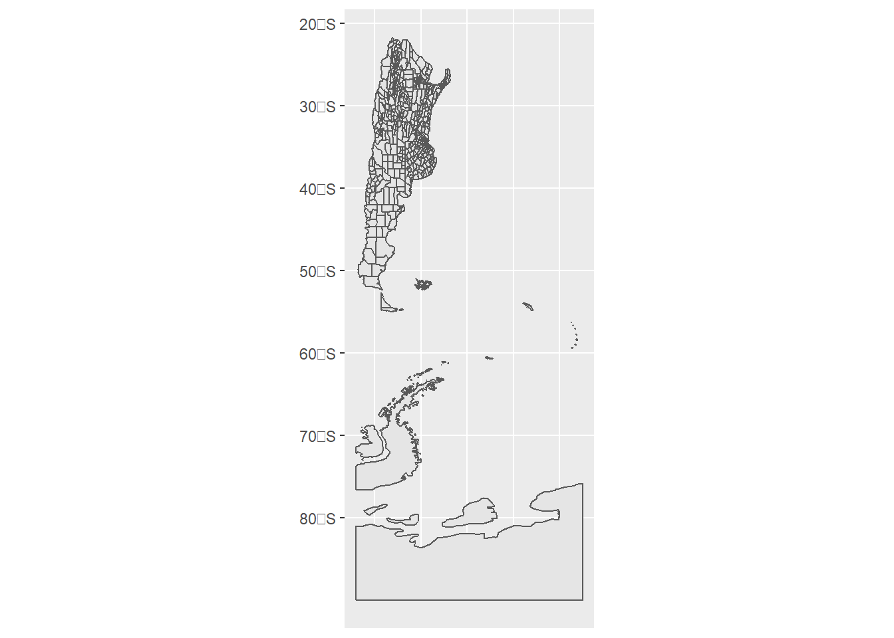
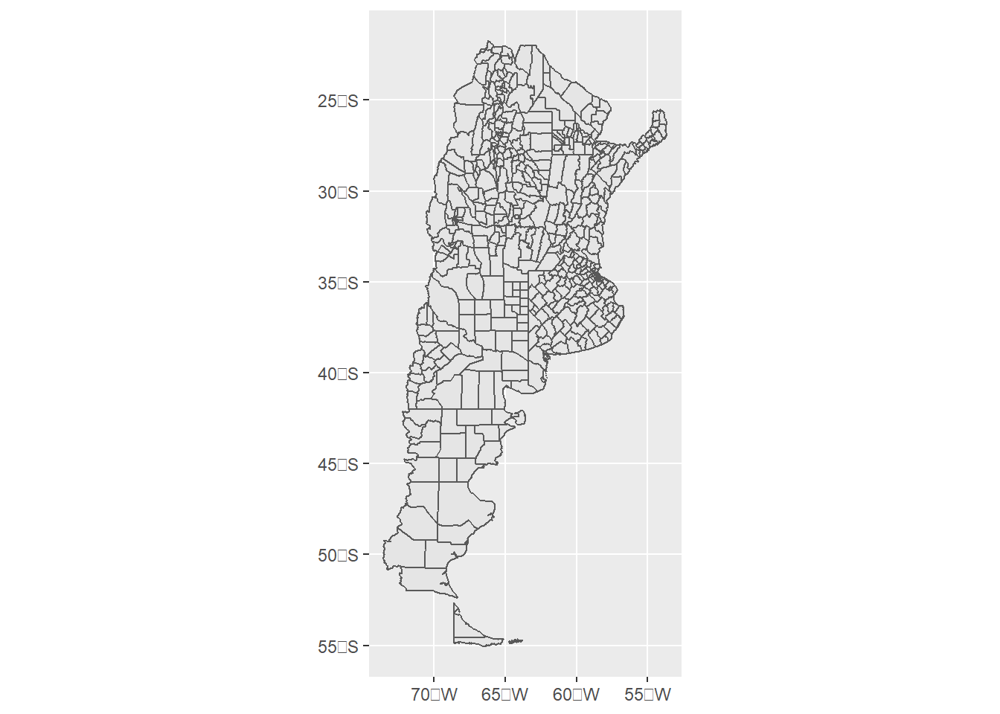
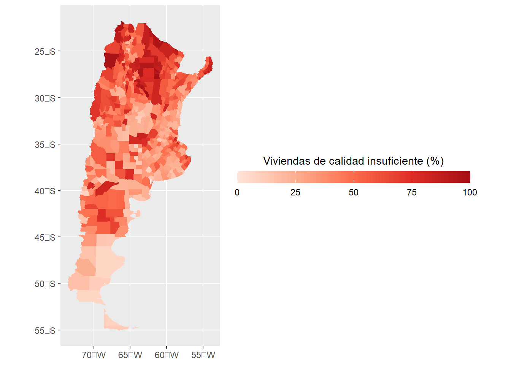
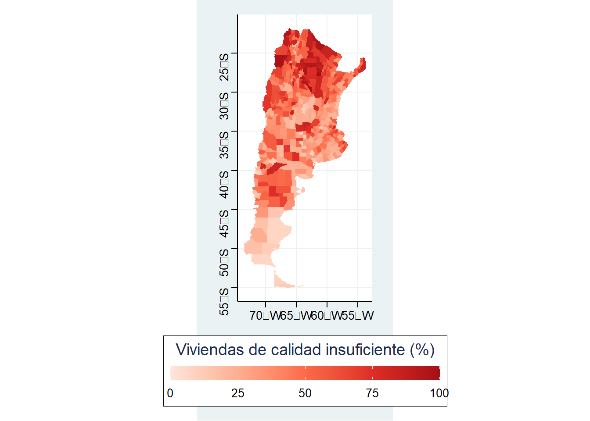
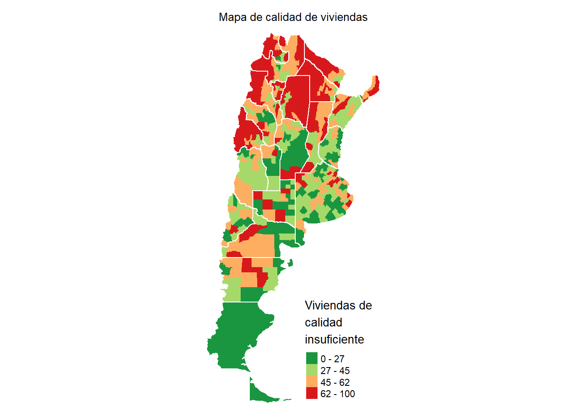

7 Haciendo visualizaciones
Hace unos años uno podría haber dicho que una de las desventajas de R es su falta de realizar visualizaciones de relevancia, ni siquiera hablar de trabajar con visualizaciones interactivas. Ejecuten el siguiente código, tal como hace Lovelace en su libro de Geocomputation, y verán que ya no es el caso:
popup = c("Nuestra clase")
leaflet() %>%
addProviderTiles("NASAGIBS.ViirsEarthAtNight2012") %>%
addMarkers(lng = c(-58.381592),
lat = c(-34.603722),
popup = popup) %>%
setView(lng = -58.381592, lat =-34.603722, zoom = 4)Este mapa interactivo es posible gracias a la implementación de Leaflet para R (deben tener instalado y cargado en la sesión el paquete homónimo para poder correrlo). Hoy en día R nos da la posiblidad de realizar excelentes gráficos y visualizaciones. Vamos a presentar los principales paquetes para hacerlo durante las próximas dos clases, haciendo énfasis en los mapas.
7.0.1 Ggplot2
Hace tiempo que ggplot2 se ha convertido en el paquete de referencia para hacer visualizaciones. En distintas partes de nuestro curso lo he mostrado, en la mayoría de veces sin su aplicación a datos espaciales. En esta clase voy a mostrar que es posible hacer gráficos con ggplot2 y sf, pero más tarde también voy a mostrar que sus funcionalidades ampliamente exceden esta extensión.
Ggplot2 (al igual que tmap y leaflet) organiza su trabajo en capas. En general, primero pasamos los datos y después vamos agregando “mejoras incrementales”. Siempre debemos comenzar con ggplot() y luego indicar qué tipo de gráfico queremos:

Como vemos, los departamentos de la Antártida y las Islas del Atlántico Sur no tienen mucho sentido para nuestras visualizaciones, y además nuestra visualización. Vamos a filtrarlas para lo que resta de la clase:
datosCalidad <- datosCalidad %>%
filter(!NOMDPTO %in% c('Islas del Atlántico sur', "Antártida Argentina"))
ggplot(data = datosCalidad) + geom_sf()
Mucho mejor. Ahora debemos rellenar los polígonos con nuestras variables, en este caso el índicador de deficiencias en la calidad de la construcción o servicios de las viviendas. Esto lo hacemos SIEMPRE dentro de la función aes(), en este caso con fill:

Lo que hace aes() es pasarle a ciertos objetos del gráfico (en este caso, fill) los valores que debe tomar. En español, lo que le decimos es “de ahora en más, rellená todos los polígonos en base a los valores de la variable indiceCalidad”. Luego, le decimos que grafique las geometrias de sf, simplemente pasándole el argumento “geom_sf”. Los colores que tiene por default son bastante malos y no queda muy en claro el valor que le corresponde a cada departamento. Vamos a empezar a hacer uso de algunas mejoras en los gráficos de ggplot2
ggplot(data = datosCalidad, aes(fill = indiceCalidad)) +
geom_sf(colour = "white") +
scale_fill_gradientn(colours = brewer.pal(n = 5, name = "Blues"),
name = "Viviendas de calidad \ninsuficiente (%)")
Bastante mejor. Lo que hicimos fue 1) cambiar el color de los límites entre los polígonos (colour = “white”) y también cambiamos los colores correspondientes a cada uno de los valores a través de scale_fill_gradientn. A esta función solo debemos asignarle una cantidad de colores, y lo que hace es generar las transiciones entre ellos para generar el gradiente de colores. Aquí es donde usamos las paletas que RColorBrewer nos ofrece (http://colorbrewer2.org/). la función brewer.pal nos pide solo dos argumentos: la cantidad de colores y la paleta. Luego, en name indicamos el título de la leyenda. Los caracteres \n son interpretados como un enter en la paleta. Prueben cambiar la paleta “Blues” por la paleta “Oranges” o "Reds.
Todavía podemos mejorar sustancialmente el gráfico. Por ejemplo, con el siguiente código:
mapa <- ggplot(data = datosCalidad, aes(fill = indiceCalidad)) +
geom_sf(colour = NA) +
scale_fill_gradientn(colours = brewer.pal(n = 5, name = "Reds"),
name = "Viviendas de calidad insuficiente (%)",
guide = guide_colourbar(
direction = "horizontal",
barheight = 0.8,
barwidth = 16,
title.position = 'top',
title.hjust = 0.5))
mapa
¡Mucho mejor! Pero hay varias cosas que incluímos, vamos a explicarlo paso por paso. En primer lugar, ya no hay línea divisora entre los polígonos, recomiendo enfáticamente removerlos cuando las unidades son muchas, pequeñas y el mapa no es interactivo, esto lo hacemos mediante colour = NA dentro de geom_sf.
Luego, dentro de el espacio donde definimos la paleta scale_fill_gradientn agregamos una colourbar, que lo que haces es modificar la leyenda dándole un mejor aspecto. Podemos elegir la dirección (en este caso, horizontal), debemos elegir tanto su largo como su ancho, elegir la posición del titulo y elegir su “justificación”, que es básicamente lo que hacemos en word eligiendo si queremos que el texto se “pegue” a la parte izquierda, este centrado o se “pegue” a la parte derecha. hjust = 0.5 lo deja centrado. Los tamaños en ggplot2 están representados en milimetros, suponiendo que en cada pulgada hay 72 puntos (72 PPI), vamos a volver a esto un poco más adelante.
Noten algo más: guardamos nuestro gráfico en un objeto que se llama “mapa”. De ahora en más podemos ir modificando este objeto agregándole capas con + como estuvimos haciendo hasta ahora. Vamos a cambiar ese fondo gris que no queda bien:

Como ggplot2 trabaja por capas, le asignamos un conjunto de formatos mediante la función theme_void. Los temas (themes) predefinidos son muy útiles ya que nos ahorran mucho código de formateo de la visualización. el paquete ggthemes contiene varios themes muy interesantes, como los del Wall Street Journal, Five Thirty Eight o Stata, más adelante vamos a probarlos. Probemos qué hubiera pasado con aplicando otro theme:

Bien, ahora querríamos colocar la colourbar abajo, tal como hace el theme_stata(), y también remover las líneas de fondo. Estas modificaciones se pueden hacer dentro de la función theme(). Dentro de ella elegimos los objetos y los modificamos. Por ejemplo, en legend.position decimos dónde queremos la leyenda ,en este caso la queremos abajo del gráfico y por eso usamos “bottom”. Luego, tomamos la grilla de fondo “panel.grid.major” y a la línea le asignamos un color transparente. También seteamos algunos parámetros para el título (que esté centrado, que tenga tamaño 16 y que esté en negrita) y el título de nuestra leyenda.
mapa <- mapa + theme(legend.position = "bottom",
panel.grid.major=element_line(colour="transparent"),
plot.title = element_text(hjust = 0.5, size = 16, face = 'bold'),
legend.title = element_text(hjust = 0.5, size = 12))
mapa
Solo nos queda agregar un título y una fuente:

Ahora nuestro gráfico quedó mucho mejor. Pueden guardardo desde “Export”, aunque rápidamente van a darse cuenta, cuando vayan cambiando las dimensiones de los plots, que a medida que lo hacen más grande, el texto queda más chico. Además, solo pueden exportar el formato del tamaño del planel multiuso. Pero no se preocupen, hice una función que hace todo esto más fácil: van a poder elegir el ancho y alto en píxeles y después solo tienen que elegir cuánto quieren que se agrande el texto. Ejecuten el siguiente código:
# Source ejecuta código R de otros archivos
source("https://raw.githubusercontent.com/datalab-UTDT/datasets/master/auxiliares.R")
plot.save(plot = mapa,
width = 500,
height = 1000,
filename ='mapa.png',
bg = "#f5f5f2")
plot.save(plot = mapa,
width = 1000,
height = 2000,
text.expansion = 2,
filename ='mapaText2.png',
bg = "#f5f5f2")¿Qué patrón observan en el mapa? Por lo que vemos, el norte del país muestra los peores valores en nuestro indicador, especialmente en las provincias del noreste.
7.0.2 Tmap
Aun siendo muy útil para nuestros mapas, Gplo2 es mucho más útil para otro tipo de visualizaciones. Para hacer clorophets, una de las visualizaciones más típicas, el paquete más simple y que más utilizarán es tmap. Ya lo hemos usado en otras ocasiones, y veamos cómo podemos hacer lo que hicimos con ggplot2 de una manera más simple:
tmapClorophet <- tm_shape(datosCalidad) +
tm_polygons(border.col = "transparent", col = "indiceCalidad",
palette=brewer.pal(n=5,"Reds"),
title = "Viviendas de \ncalidad \ninsuficiente") +
tm_layout(legend.format = list(text.separator = "-"),
main.title = "Mapa de calidad de viviendas",
main.title.size = 0.8,
frame = FALSE)
tmapClorophet
Como vemos, la sintaxis es relativamente similar a ggplot2. Primero debemos informar cuáles son los datos dentro de tm_shape (en este caso, datosCalidad). Luego indicamos qué queremos graficar: polígónos (tm_polygons). Al igual que en el anterior gráfico, no queremos que haya divisiones entre los polígonos así que lo pasamos a “transparent”. Elegimos el color por el cual queremos que rellene los polígonos con col, la paleta con palette y el título de la leyenda con title. Luego, con tm_layout() modificamos el aspecto de la leyenda, específicamente el separador entre las categorías (en lugar de “to”, que use “-”). Cambiamos el título y sacamos el frame que viene por default ¡Muy fácil!
Todavía más, con estos mapas podemos discretizar rápidamente nuestros plots. Por default nos genera las 5 categorías que dividen a la variable (de 0 a 100). En lugar de eso, podemos mejorar esta aproximación al graficar en 4 categorías a los departamentos de tal manera que en cada una de estas categorías se acumule aproximadamente la misma cantidad de departamentos. Estos son los quintiles de una distribución y tmap nos hace el trabajo muy fácil.
tmapClorophet <- tm_shape(datosCalidad) +
tm_polygons(border.col = "transparent", col = "indiceCalidad",
palette=rev(brewer.pal(n=4,"RdYlGn")),
breaks = quantile(datosCalidad$indiceCalidad),
title = "Viviendas de \ncalidad \ninsuficiente") +
tm_layout(legend.format = list(text.separator = "-"),
main.title = "Mapa de calidad de viviendas",
main.title.size = 0.8,
frame = FALSE)
tmapClorophet
La clave fue el argumento breaks, donde indicamos dónde queremos que corte a la variable. quantile() corta en cuatro porciones a la variable índice de calidad, mientras que usamos otro tipo de paleta y, ademas, invertimos el orden usando rev().
Vamos a mejorar nuestro gráfico utilizando simultáneamente los polígonos de las provincias de Argentina. Podrían repetir el procedimiento leyendo los shapefiles con el comando readOGR tal como hicimos con los departamentos. Sin embargo, para aprender a leer otro tipo de archivos donde se guardan datos espaciales, vamos a usar la función st_read y leer un archivo geojson:
mapaProvincias <- read_sf("https://github.com/datalab-UTDT/datasets/raw/master/provincias.geojson")
mapaProvincias <- mapaProvincias[-24,]tmapClorophet <- tm_shape(datosCalidad) +
tm_polygons(border.col = "transparent", col = "indiceCalidad",
palette=rev(brewer.pal(n=4,"RdYlGn")),
breaks = quantile(datosCalidad$indiceCalidad),
title = "Viviendas de \ncalidad \ninsuficiente") +
tm_layout(legend.format = list(text.separator = "-"),
main.title = "Mapa de calidad de viviendas",
main.title.size = 0.8, main.title.position = 'center',
frame = FALSE) +
tm_shape(mapaProvincias) +
tm_borders(col = "white")
tmapClorophet
Ahora podemos ver como guardar un objeto tmap usando save_tmap. Tener en cuenta que el ancho y el alto en este caso tienen que multiplicarlo por 300 para conocer el tamaño en píxeles total (esto es porque tiene predefinido ppi=300). Por ejemplo, el archivo “tmapClorophet.png” debería tener 900px de ancho.
7.1 Leaflet
Hasta ahora hemos estado trabajando con gráficos estáticos. En muchas oportunidades son útiles, y cuando debemos hacer reportes o determinadas presentaciones son nuestra única opción. Sin embargo, los mapas interactivos nos permiten consultar los datos de una manera distinta y son una buena alternativa para compartir las visualizaciones. Vamos a ver un simple ejemplo de utilización de Leaflet, mostrando las mismas visualizaciones que estuvimos haciendo hasta el momento para los datos del censo.
Todas las visualizaciones de leaflet deben comenzar con la función leaflet() y, a diferencia de ggplot2 y tmap, en leaflet usamos %>% para ir agregando las capas. addTiles() plotea la “imagen” del mundo, si no usamos esa función solo veremos un output gris
Ahora deberíamos indicar qué tipo de figura deseamos agregar. En nuestro caso, queremos agregar polígonos, por lo que usaremos la función addPolygons
Debemos rellenarlos con los valores correspondientes al índice de deficiencia de viviendas que armamos anteriormente. Para eso tenemos que crear una paleta, como ya hicimos en ggplot2 y tmap. En Leaflet lo que tenemos que usar es la función colorBin. A ella le pasamos una paleta de RColorBrewer, en orden reverso para que vaya desde verde (valores más bajo) a rojo (valores más altos). Al mismo tiempo, seteamos a FALSE los bordes de los polígonos (stroke=FALSE) y la opacidad a 1 del relleno (fillOpacity=1) para que veamos correctamente los colores.
pal <- colorBin("RdYlGn", reverse = TRUE,
domain = datosCalidad$indiceCalidad,
bins = quantile(datosCalidad$indiceCalidad))
leaflet() %>%
addTiles() %>%
addPolygons(data=datosCalidad,
stroke = FALSE,
fillColor = ~pal(indiceCalidad),
fillOpacity = 1)Para terminar, vamos a agregar los labels, es decir lo que aparece cuando nos posicionamos sobre alguno de los polígonos. Esto lo hacemos con el arugmento label dentro de los polígonos. Al igual que fillColor, debemos pasarlo como fórmula, es decir usando el prefijo ~, y luego usamos la función paste0, que como ya hemos visto en clases anteriores “pega” o colapsa los vectores. En este ejemplo queremos que diga el nombre del departamento, dos puntos, el valor del índice de calidad y luego el signo %. Además, agregamos el contorno de las provincias agregando otra capa de polígonos, pero sin relleno y solo con el contorno en blanco
7.2 Ejercicios
En la carpeta de datos del censo todavía hay dos archivos csv que no usamos: los datos de hogares y de individuos. Usando nuestro dataset de viviendas, unan los hogares a las viviendas y, luego, los hogares a los individuos. Una vez que tengan el dataset con los individuos, y el departamento al que pertenecen, creen un mapa con tmap, tal como hicimos con el índice de vivienda, pero ahora con la edad promedio por departamento (tener en cuenta que la variable “años cumplidos” es la P03)